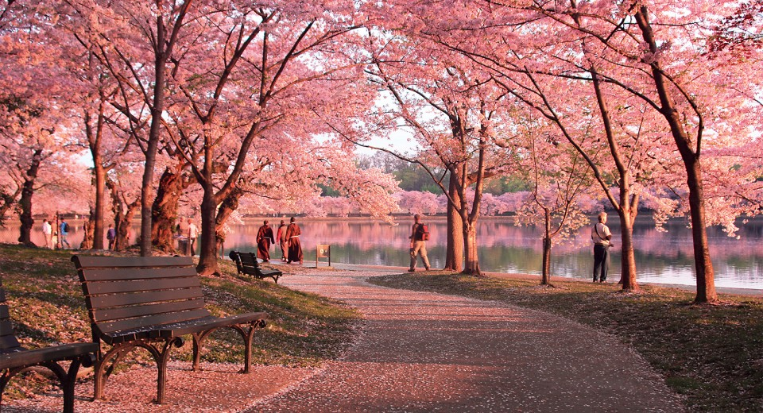
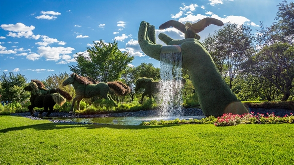
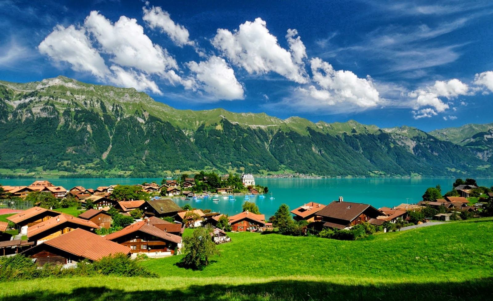
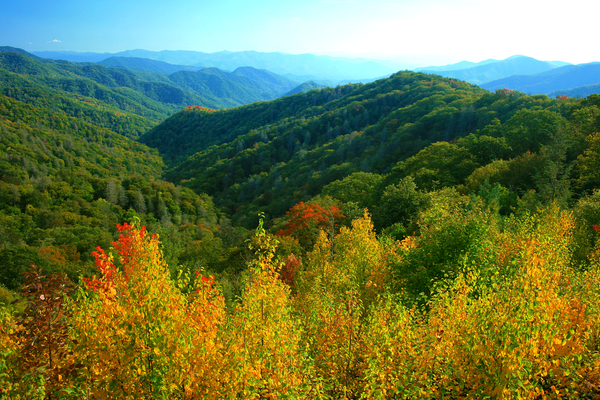
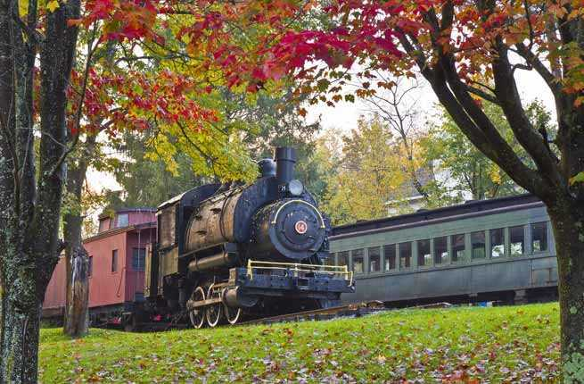
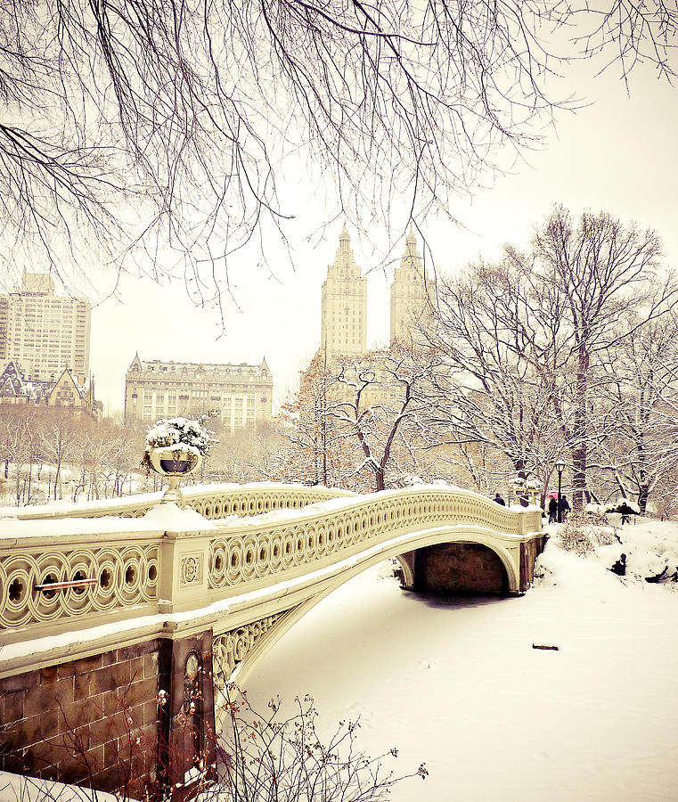

What's your favorite season?:
Spring: Are you in love with gardens and flowers? Does pollen not bother you like it does to others? Does seeing color in the environment make your day light up? If so, you are a Spring lover!
Summer: Are you able to go outside and not get bothered by insects? Are you in love with summer vacay? If so, you're a summer lover!
Fall: Are you in love with the cool weather? Do you enjoy sweater season wearing scraves while sipping on your favorite drink from Starbucks? If you do then you should visit the Fall location!
Winter: Are you in love Christmas? Do you love the snow? Do you wait for that time of the year again when you can sip your hot chocolate while sitting by the fireplace? If so, you are a winter lover!
Destinations Season-Wise:
Spring:
Washington D.C.

Montreal

Summer:
Zurich, Switzerland

Dubai, UAE

Fall:
Gatlinburg, Tennessee

Catskills, New York

Winter:
New York City

Rocky mountains